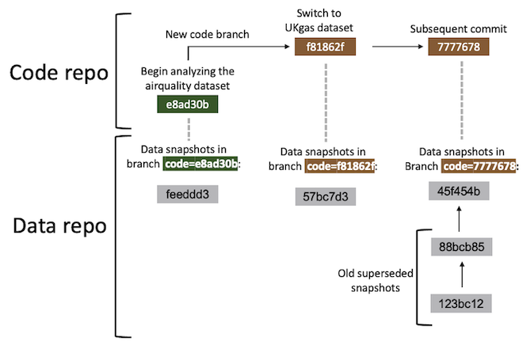

This tutorial shows how to use gittargets with the Git-based data versioning backend. Before proceeding, please read the README file or documentation website front page for an overview of the package.
Installation
Please begin with the installation instructions on the documentation website. In addition, if your targets pipeline generates large data files, consider installing Git LFS. The Git data backend in gittargets automatically opts into Git LFS, so you should not need to do any manual configuration to reap the performance benefits.
Remotes
This backend is uses local Git only. It is possible to push the snapshotted data store to a cloud service like GitHub, GitLab, or Bitbucket, but this is the user’s responsibility. Pipelines usually generate large data files, and GitHub and its peers have file size limitations. Also, gittargets automatically opts into Git LFS locally (unless git_lfs is FALSE in tar_git_init()), and Git LFS on the cloud is a paid service.
Overall workflow
The most important steps of the Git data backend are as follows. The rest of this vignette walks through these steps in greater depth.
- Create the source code and run the pipeline at least once so the data store exists.
-
tar_git_init(): initialize a Git/Git-LFS repository for the data store. - Bring the pipeline up to date (e.g. with
tar_make()) and commit any changes to the source code. -
tar_git_snapshot(): create a data snapshot for the current code commit. - Develop the pipeline. Creating new code commits and code branches early and often, and create data snapshots at key strategic milestones.
-
tar_git_checkout(): revert the data to the appropriate prior snapshot.
Create code
To begin development, we write _targets.R file for a targets pipeline. targets can handle large complex pipelines for machine learning, Bayesian data analysis, and much more. However, this tutorial focuses on a much simpler pipeline for the sake of pedagogical simplicity.
# _targets.R
library(targets)
list(
tar_target(data, datasets::airquality),
tar_target(result, summary(data))
)Run pipeline
With our target script in hand, we run the pipeline.1
tar_make()We inspect the output with tar_read().
tar_read(result)Commit code
We usually iterate between writing code and running the pipeline until we have a decent set of results. After that, we commit the code to a Git repository, which may or may not live on GitHub.2 Happy Git with R is a great way to learn Git, and the gert package is a convenient way to interact with Git from R.
library(gert)
git_init()
git_add("_targets.R")
git_commit("Begin analyzing the airquality dataset")
git_branch_create("airquality")Snapshot data
Before we snapshot the data, we should check that the code is up to date in the Git repository and the targets are up to date in the pipeline. The tar_git_status() function is an easy way to do this.3
Our code and pipeline look ready for a data snapshot. First, we initialize the data repository with tar_git_init(). tar_git_init() writes a .gitattributes file in the data store that automatically opts into Git LFS. If you have Git LFS but do not wish to use it, please remove the .gitattributes after calling tar_git_init().
Then, we create our first data commit with tar_git_snapshot().4
Snapshot model

In the Git data backend, a data snapshot is a special kind of Git commit (gray boxes above). Each data commit is part of a data branch (vertical dashed lines above), and each data branch is specific to the current code commit (green and brown boxes above). In fact, each data branch name is of the form "code=<SHA1>", where <SHA1> is the Git SHA1 hash of the corresponding code commit. You can always create a data snapshot, but it will supersede any prior data snapshot you already have for the current code commit. To revert to a previous data snapshots for a given code snapshot, you will need to manually enter the repository and check out the relevant data commit.
Repeat
Development typically happens in cycles: develop the code, run the pipeline, commit the code, snapshot the data, and repeat. Not all code commits need a data snapshot, especially if the targets pipeline generates a lot of data. But even then, it is helpful to snapshot the data at key milestones, e.g. if an alternative research question comes up and it is desirable to create a new Git branch for the code. For example, suppose we wish to apply the same pipeline to a different dataset. The code changes:
# _targets.R
library(targets)
list(
tar_target(data, datasets::UKgas), # different dataset
tar_target(result, summary(data))
)We run the pipeline and inspect the new output.
tar_make()
tar_read(result)We put the code in a new Git branch.
git_branch_create("UKgas")
git_add("_targets.R")
git_commit("Switch to UKgas dataset")Finally, we create a data snapshot for the new code commit.
View log
Now, suppose we want to switch the project back to the original dataset (airquality). To transition completely, we need to revert both the code and the data. If we only revert the code, then the data store will sill reflect the UKgas dataset, and none of our targets will be up to date. At this point, it is a good time to pause and check the gittargets log to see which code commits have available data snapshots.5
Check out code
To check out the old airquality code, we use gert::git_branch_checkout().
git_branch_checkout("airquality")But because we did not revert the data, our results still reflect the UKgas dataset.
tar_read(result)Thus, all our targets are out of date.
Check out data
To bring our targets back up to date with the airquality data, instead of beginning a potentially long computation with tar_make(), we can check out the data snapshot that matches our current code commit.
Now, our results reflect the airquality dataset we previously analyzed.
tar_read(result)And all our targets are up to date.
Merges
It is common to merge code branches into one another. When this happens, a new merge commit is created in the code repository, and the data repository remains unchanged. In fact, the only change is that the code repository is now at a new commit that has no data snapshot yet. If you wish, simply create a new data snapshot with tar_git_snapshot(). If the code commit immediately prior had an up-to-date data snapshot of its own, then the new snapshot for the merge commit should cost little storage or runtime.
Custom data files
Only files inside the targets data store are tracked in a gittargets data snapshot. If your pipeline requires custom external files, you may put them in a folder called _targets/user/. That way, gittargets will automatically put them under data version control in the next snapshot.
Performance
If your targets pipeline generates large data files, consider installing Git LFS. Once you install Git LFS, it should just work on your project right out of the box because tar_git_init() writes the following to _targets/.gitattributes:
objects filter=lfs diff=lfs merge=lfs -textIn addition, every data snapshot with tar_git_snapshot() creates a new Git branch. With thousands of commits and thus thousands of branches, performance may suffer unless you ensure pack_refs is TRUE in the function call (default).6(https://git-scm.com/docs/git-pack-refs) in the command line with your working directory inside _targets/.]